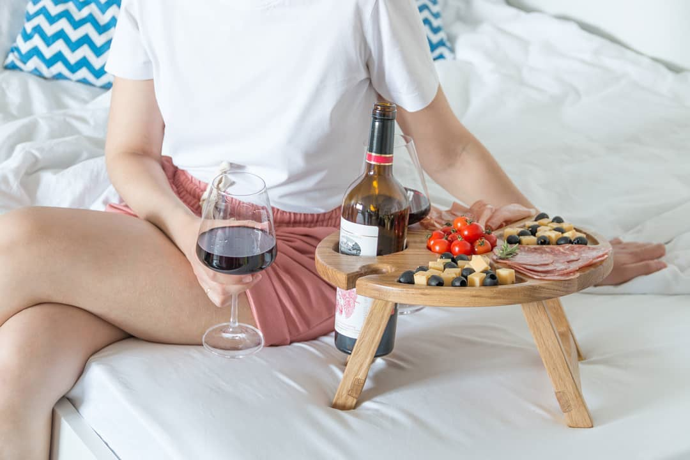
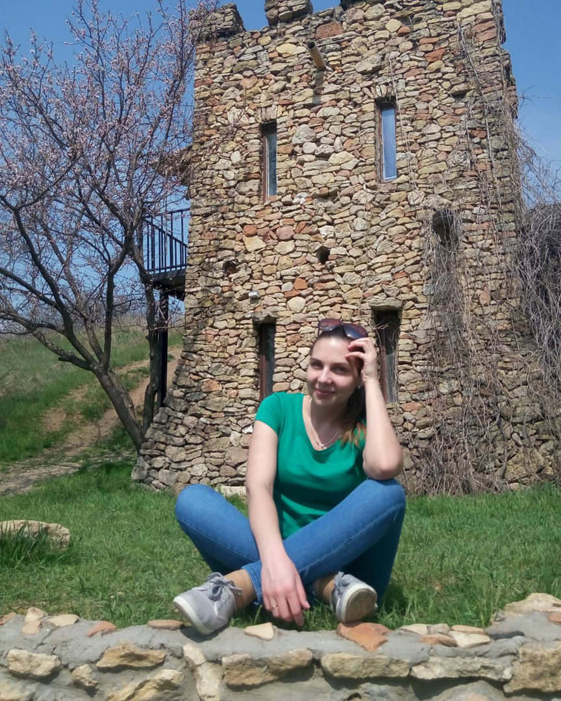
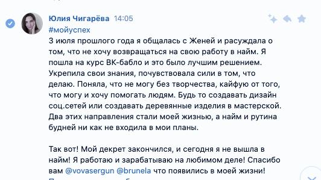

— 3 июля прошлого года я общалась с Евгенией и рассуждала о том, что не хочу возвращаться на свою работу в найм. Я пошла на курс ВК-бабло и это было лучшим решением.
Так написала мне ученица Юлия Чигарева.
Почему это стало лучшим решением Юли, как она развивалась, читайте в нашем с ней интервью.
— Юля, расскажи, что было до курса, какой средний доход был в месяц? Сколько клиентов?
— Изначально была мастерская. Мы с мужем занимаемся изготовлением деревянных изделий, поэтому была задача развить сообщество, поднять продажи в этом направлении. Было не густо заказов, да и само сообщество не упаковано. Уже тогда параллельно с этим я начинала заниматься дизайном в запрещенной сети. Клиентов на дизайн было мало 1-2 в месяц, больше делала акцент на своём обучении. Суммы были смешные 500-1000р. Я же пришла к вам, что бы развить свое деревянное ремесло, это потом у меня поменялись приоритеты)
— То есть ты полностью отказалась от мастерской? или все-таки муж продолжает заниматься?
— Муж продолжает заниматься, но это осталось больше как наше хобби. Занимаемся. когда есть какие-то идеи или если принимаем участие в ярмарках.
— Продвижением то есть не занимаетесь, не ведете контент, таргет не запускаете?
— Конкретно сейчас в мастерской контент не веду, но после одной из ярмарок осталось много изделий, поэтому подумываю запустить таргет на распродажу. До этого пользовалась и запускала рекламу, приходили заказы с неё. Сейчас у нас меньше времени на мастерскую, у мужа основная работа, а у меня работа в сети по дизайну.

— Ок, значит прийдя на курс, ты просто определилась с видом деятельности и решила, что дизайн соц.сетей тебе выгоднее и интереснее, верно? Но там до курса не было заказов, от слова совсем?
— Да, мне выгоднее зависеть от себя, от своих действий, поэтому выбрала дизайн, это востребовано и это то, что мне приносит удовольствие и доход) Да, до курса не было заказов совсем, было не упакованное сообщество и не понимание, что вообще делать.
— Какие сложности были во время обучения на нашем курсе? На сколько сложно было учиться? За сколько прошла обучение?
— Не сложно, все технические моменты прошла достаточно быстро и понятно. Сложности были в текстах, которые нужно писать для постов. До сих пор висят не открытые последние 3 урока.
— Как сейчас с постами? Ты ведь без куратора проходила, как думаешь, с куратором было бы эффективнее? Легче может быть с постами?
— С текстами так же тяжело, не люблю, не хочу их писать, поэтому пишу крайне редко, возможно от этого еще не кратно выросла в доходе. Смотрю всё ещё в сторону “Пиши огонь посты”)) Возможно, с куратором было бы легче, но чат и круг поддержки в чате огромный, в чате люди помогают, если возникают вопросы.
— Какие сейчас действия делаешь для привлечения клиентов? Как часто пишешь посты? Запускаешь ли рекламу?
— На этом вопросе поняла, что я мало делаю и не самый лучший пример. Посты пишу раз в 1,5 - 2 месяца. Чаще публикую сюжеты с процессом или работами. Рекламу не запускаю. Ставлю лайки, пишу комментарии там, где моя ца. Участвую в обсуждениях под постами экспертов.
— А можешь поделиться, как изменилась жизнь, когда увеличился доход? Может что-то купила себе? Съездила в путешествие? Что-то смогла сделать, чего раньше не могла позволить себе
— О, да! Так случилось, что мы впервые за время моего декрета куда-то поехали. Декрет закончился, в марте я уволилась с работы. А через 2 месяца мы поехали в путешествие на машине: Москва - Санкт-Петербург - Карелия, а потом ещё через 2 месяца на Кавказ. В общем, начали путешествовать. Регулярно хожу на бьюти процедуры, начала себе это позволять, для радости.

— Всё, остался только вопрос сколько сейчас зарабатываешь? Сколько в среднем в месяц? Сколько клиентов? А вот примерно сколько за год было прошедший заработано?
— 30-40 стабильно. В среднем, в месяц у меня от 8 до 15 клиентов, есть постоянные, с кем сотрудничаем уже из проекта в проект. Добавлю тот факт, что я работаю, скажем процентов на 40 своих усилий, и я это понимаю и принимаю пока. Дальше хочу больше.
— А работаешь на 40% по каким причинам?
— У меня ребенок, который ходит в сад, и постоянно болеет. Почти весь октябрь просидели дома, при этом я как-то управлялась с заказами.
— Я считаю, что я много ленюсь. И ещё, я – идеалист, что бы выложить какой-то проект, мне нужно его упаковать, расписать и т.д. Но я этого не делаю. Хочу это делать красиво и грамотно, а не на скорую руку. Поэтому 90% моих работ не выложены((
— Вот так-так))) Идеалист, перфекционист и... пофигист, как в анекдоте))) лучше идеально, но никогда, чем как-нибудь и сейчас))
— Согласна, головой это понимаю)) поэтому пора начинать. Начну, там и рост.
— Именно так, молодец)
— Спасибо вам. За ваш курс, обратную связь Я очень признательна за эту возможность иногда работать с учениками курса!

— Уиии, спасибо! Желаем тебе роста и процветания)